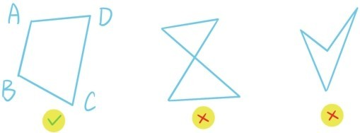
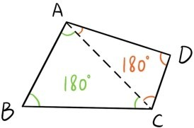
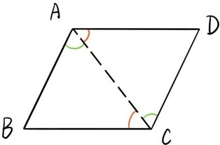
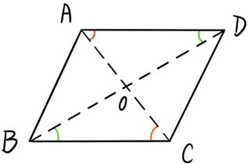
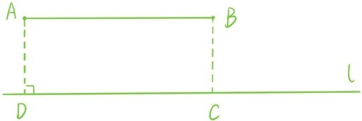

四边形ABCD是指将4个顶点A，B，C，D（其中任何3点都不在同一条直线上）依次连结形成的图形。

要求四边形的4个边不能相交于顶点以外的点，而且四边形是凸的，所以四边形的对角线都在四边形内部。类似地可以定义五边形，六边形……对于任何大于2的整数n，都可以定义n边形。
定理4.1 四边形的内角和等于360°。

证明：连结四边形对角线AC。根据定理2.1，∠CAB+∠B+∠ACB=180°，∠CAD+∠D+∠ACD=180°，所以∠BAD+∠B+∠BCD+∠D=360°（证毕）。
我们知道，两组对边分别平行的四边形称为平行四边形。
定理4.2 平行四边形的对边相等，对角相等。

证明：连结平行四边形ABCD的对角线AC。根据定理1.3，∠ACD=∠CAB，∠DAC=∠BCA，根据角边角定理，△ACD≌CAB，所以AD=BC，∠B=∠D。同理，AB=CD，∠DAB=∠BCD（证毕）。
定理4.3 平行四边形的两条对角线互相平分。

证明：连结平行四边形ABCD的对角线AC与BD，令它们的交点为O。根据定理1.3，∠OAD=∠OCB，∠ODA=∠OBC。根据定理4.2，AD=BC。最后根据角边角定理，△AOD≌△COB，所以AO=OC，BO=OD（证毕）。
定理4.4 若直线AB与直线l平行，则A到l的距离和B到l的距离相等。

证明：过点A作l的垂线交l于点D，过点B作l的垂线交l于点C。根据定理3.1，AD平行于BC，因此四边形ABCD是平行四边形。根据定理4.2，AD=BC（证毕）。
提问时间
证明下面4个定理：
定理4.5 一组对边平行且相等的四边形是平行四边形。
定理4.6 两组对边都相等的四边形是平行四边形。
定理4.7 两条对角线互相平分的四边形是平行四边形。
定理4.8 n边形的内角和等于(n-2)·180°。